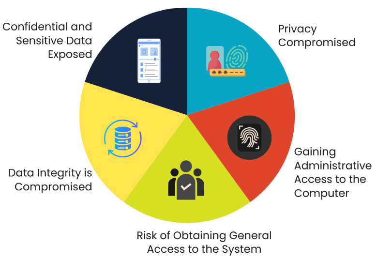

SQL injections and how to prevent it
This project is hosted on github: check it out!
Github linkIntroduction
Using SQL with another programming language, like Python, is very common.
As an example, when creating an account on a website, credentials created through the front-end interface are stored in a database, in the back-end. The input values (username, password) are passed as variables and used in a SQL query to insert these new records.
Another example: querying a database and processing the data as part of a python script, using variables to customize queries.
It is import to be aware of what SQL injection is and implement ways to prevent it. In many companies, with "shadow IT", some key security practices aren't implemented and vulnerabilities exist, waiting to be exploited.
Understanding SQL injection and its risks
SQL injection (SQLi) is a code injection technique where a hacker uses a SQL code snippet to manipulate a database. Very often, web interfaces where inputs are required and then used to communicate with a database, there are risks. Risks can be of different nature, summarized below (source: Knowledge Academy).
1 - Creating an account via a front-end interface
It is not possible to know in advance the username and password that will be chosen by someone when creating its account. These are variable values that will be handled in the back-end, inserted into a SQL query template and then sent to the database.
Below is a bad example of how it could look like in the back-end. This code is prone to SQL injection and I will explain why.
# note: never do this - this is an example to demonstrate SQL injection risks!
# using username and password as variables
username = "variable_user_name"
password = "variable_password"
# using a formatted string to pass these variables
create_account_parameterized_query = """
INSERT INTO users (username, password) VALUES
('{0}', '{1}');
""".format(username, password)
cursor.execute(create_account_parameterized_query)
2 - Malicious SQL injection
There exists malicious users (and cybersecurity consultants), that will test your code and look for vulnerabilities to exploit.
With the above example, the SQL query is dynamically constructed, through string formatting. The problem is that the string can be anything, including malicious code.
In the below example, the password variable is used for an SQL injection, to steal records from the database.
A semicolon (;) is used to indicate a new SQL statement and the '--' sequence is used to comment/ignore anything that would be written after.
# using username and password as variables
username = "malicious_user"
password = "fake_password\');SELECT * FROM users--"
# using a formatted string to pass these variables
sql_injection_query = """
INSERT INTO users (username, password) VALUES
('{0}', '{1}');
""".format(username, password)
cursor.execute(sql_injection_query)
# records cannot be stolen this time
try:
stolen_records = cursor.fetchall()
print("Successful SQL injection")
except:
print("SQL injection attempt failed")
3 - Preventing SQL injections
The main idea is to pass the variables separately, as parameters, rather than dynamically constructing the SQL query through concatenation or string formatting.
This basically consists in leveraging the capabilities offered by your programming language / package.
In the below example, using psycopg2 (Postgre SQL database adapter for Python), variables are passed separately and therefore interpreted as values, not arbitrary SQL code.
In the example below, note the %s placeholders in the SQL query and then the variables sent in a tuple argument in the execute() function.
# using username and password as variables
username = "malicious_user2"
password = "fake_password\');SELECT * FROM users--"
# using a formatted string to pass these variables
sql_injection_query = """
INSERT INTO users (username, password) VALUES
(%s, %s);
"""
# variables are passed as tuple, using the package's capabilities
cursor.execute(sql_injection_query, (username, password))
# records cannot be stolen this time
try:
stolen_records = cursor.fetchall()
print("Successful SQL injection")
except:
print("SQL injection attempt failed")
Conclusion
Being aware of what SQL injection is, the threats it poses and leveraging your programming language capabilities properly will drastically reduce the risk of SQL injection.
Separating your variables from your SQL query may not guarantee total safety, this will significantly reduce the risk of SQL injection.
As a data analyst, working with databases and leveraging a programming language's capabilities, it is essential to have some cyber security awareness.